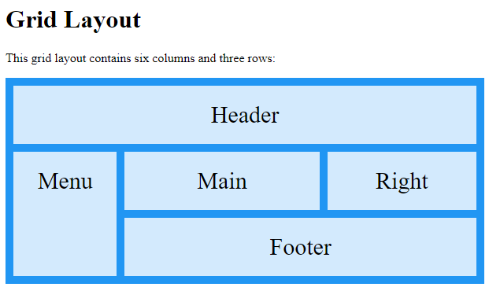
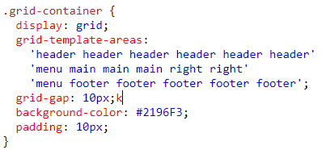

At noget er responsivt er et spørgsmål om hvorvidt det fungerer på kryds af forskellige platforme. Eksempelvis om en side er kodet specifikt til en browser på computeren – eller lavet til smartphonen.
Vi benytter os ofte af en regel, med udtrykket ”Mobile First” – Altså vi koder først og fremmest siden til mobilen, derefter til evt. tablets og pc’er. Dette er en vigtig regel, eftersom vi i stigende grad ser flere brugere af smartphones og tablets, end traditionelle computere.
Vælger man at lave siden responsiv; vil evt. tekst, billeder og andet indhold følge flydende med når man ændre i skærm størrelsen. I ”gamle dage” før smartphones tid – så man flere Statiske eller Adaptive webdesigns. Selvom de stadig findes i dag, er det de færreste opdaterede sider, som gør brug af denne teknik, eftersom det primært er designet til pc brug.
Den gamle metode fra før smartphone tiden.
Består af en række Statiske layouts, men benytter sig af @medieaqueries - Startigien her er 'mobile last'.
Giver tilgengælighed på alle skærme - vi koder primært med dette layout. Her benytter vi os af @media ; hvilket er regler som medgiver hvilken skærm man bruger.
En side består af kolonner og rækker. Der er flere måder hvorpå man kan positionere disse.
Min personlige favorit er CSS Grids – da den kan tage sig af både kolonnerne og rækkerne på samme tid, i modsætning til andre positioneringssystemer, såsom flexbox.
 Med grids giver man siden et "grid-template-areas" - som kan ses på ovenstående billede
Her har man givet de forskellige items (kasser) en række id'er, som fortæller man hvormeget det enkelte grid skal fylde.